物质结构
5.1 分子结构的测定
5.1.1 物质结构的表示
结构——颗粒物质的结合结构（立体几何）
Tips:
1. 原子通过化学键构成各种分子。 2. 分子通过分子间作用力聚集形成各种形态的物质
我们一般从两个角度表示一个物质的结构：
- 定性和定量
+ “甲酚中的\({\rm CH_3}\)基团在\({\rm OH}\)基团的邻位”
——定性表示甲酚分子的结构 + 指明甲酚中每个原子的坐标值（数字化）
——定量的表示甲酚分子的结构 + 物质的定量结构由物质中所有原子的坐标来确定。 - 静态与动态 + 静态中原子坐标是常数 + 动态中原子坐标是关于时间的函数
5.1.2 物质结构的确定
对于一个物质结构，在进行理论计算与预测后，需要实验方法来确定，我们有两种方法：
- 定性测量——核磁共振，红外光谱等方法
- 定量测量——直接测定所有原子的精确坐标
但是定量测量所需面对的数据非常大，耗时非常可怕。
但是，在研究中我们发现了一些物质的结构具有周期性和对称性，这些物质被统一归入晶体。
5.1.3 晶体与非晶体
晶体是原子周期地，对称地聚集而形成的固体。晶体与非晶体的根本区别在于：原子的排列是否具有周期性。
Tips:
+ 由于晶体具有周期性和对称性，我们将重复的部分（可能是原子或者分子）抽象为一个点，如此重复的点构成一个点阵。
+ 而这个点阵处在一个空间中，参考高中知识，如果我们选定三个方向作为坐标轴，建立一个空间坐标系（不一定是直角），那么所有点阵里的点都可以被连接起来，形成一个个具有周期性规律的格子，这个格子被称为晶格，最小的单位格子被称作晶胞。
由以上知识，我们讨论一下有关于晶胞的知识：
首先在一个晶体中，晶胞是最小的重复单位，并且一定是无隙并置，因此测定一个晶体的关键是测定一个晶胞，也就是测定一个晶体的周期性，对此我们需要确定晶胞的六个参数，也称作晶胞参数。
知道了晶胞参数，我们还需要确定晶体的对称性，以及不对称单元内的原子坐标，后者也是现代晶体学的核心内容。
Tips:
由以上晶胞参数，我们将晶体分为七类：
- 立方晶胞（\({Cubic}\)）
晶胞参数：\({a = b = c,\ \alpha = \beta = \gamma = 90^\circ}\)
代表晶体：氯化钠（\({\rm NaCl}\)）
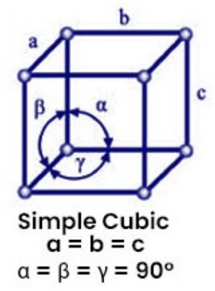
- 四方晶胞\({（Tetragonal）}\)
晶胞参数：\({a = b \ne c,\ \alpha = \beta = \gamma = 90^\circ}\)
代表晶体：二氧化钛（\({\rm TiO_2}\)）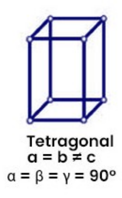
- 正交晶胞\({（Orthorhombic）}\)
晶胞参数：\({a \ne b \ne c,\ \alpha = \beta = \gamma = 90^\circ}\)
代表晶体：硫（\({\rm S}\)）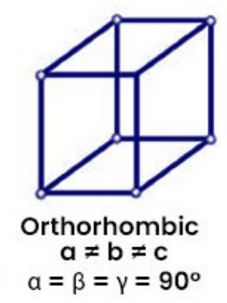
- 三方晶胞\({（Rhombohedral）}\)
晶胞参数：\({a = b = c,\ \gamma \ne \alpha = \beta = 90^\circ}\)
代表晶体：石英（\({\rm SiO_2}\)）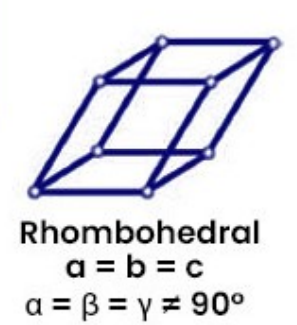
- 单斜晶胞\({（Monoclinic）}\)
晶胞参数：\({a \ne b \ne c,\ \alpha = \beta = \gamma \ne 90^\circ}\)
代表晶体：硫酸钠（\({\rm NaSO_4}\)）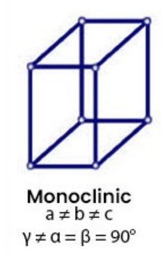
- 三斜晶胞\({（Triclinic）}\)
晶胞参数：\({a \ne b \ne c,\ \alpha \ne \beta \ne \gamma \ne 90^\circ}\)
代表晶体：铝土矿（\({\rm Al_2O_3}\)）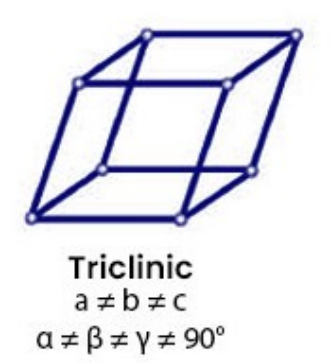
- 六方晶胞\({（Triclinic）}\)
晶胞参数：\({a = b \ne c,\ \alpha = \beta = 90^\circ, \gamma = 120^\circ}\)
代表晶体：石墨（\({\rm C}\)）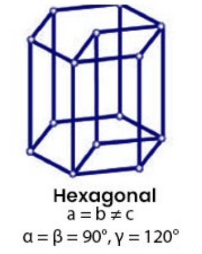
5.1.4 测定晶体结构的实验方法
**单晶的X射线衍射实验：**
实验原理:
入射X光与晶体中电子云相互作用，向各方向散射出X光，这些散射的X光互相干涉，叠加而加强的X射线形成衍射光。
由衍射原理，波程差等于波长的整数倍，我们有\({Bragg}\)方程：
其中，\({\theta}\)是入射光与衍射光的夹角，\({d}\)是晶面距离，\({\lambda}\)是X光的波长。

5.1.5 原子坐标的测定
-
获得电子云密度函数
通过对衍射强度进行处理，恶意得到晶胞中各处的电子云密度*\({\boldsymbol{ \rho}}\)。 -
确定等电子云密度线
图中的等电子云密度线展示了电子云密度的分布状况，根据原子结构模型，我们可以知道分子中各个原子的具体位置，并且可以根据各个密度中心的大小确定相应位置上的原子种类。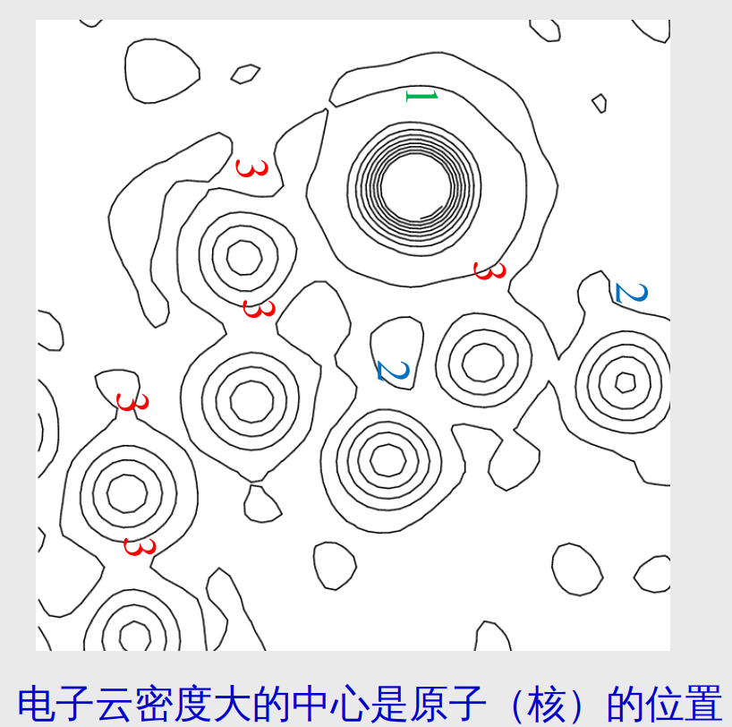
-
确定晶体中原子位置（坐标）
通过对原分子中各个原子对应不同的电子云密度中心，得到相应的原子坐标。
-
晶体结构的立体图（视角差\({3^\circ}\)）

~~（裸眼3D）~~
5.1.6 晶体结构举例
- 四水合硫酸亚铁\({\rm FeSO_4·4(H_2O)}\)

Tips:
+ 由上图不难得知，在四水合硫酸亚铁\({\rm FeSO_4·4(H_2O)}\)中，不包含有结晶水，只有配位水。其中分子与分子之间形成了二聚体。 + 所以四水合硫酸亚铁的化学式可以写作\({\rm [Fe(H_2O)_4SO_4]_2}\) + \({\rm [Fe(H_2O)_4SO_4]_2}\)不是离子晶体，是由二聚体分子形成的晶体。关于离子键的更多补充：
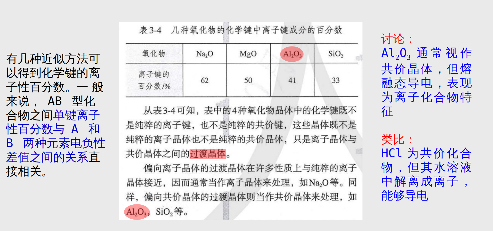
+ 没有绝对的离子键或者共价键，只能说两者谁在这个化学键的作用中更加突出一点 + 对于一些无法归为共价晶体或者离子晶体的（很多是因为分子中不同原子之间的电负性相差得不大不小），我们称之为过渡晶体，比如\({\rm Al_2O_3}\)
- 五水合硫酸铜\({\rm CuSO_4·5(H_2O)}\)

- 氨基酸的盐

- 一种药在结晶状态的分子结构

- 有机物离子间的氢键
二羟基苯甲酸咪唑盐的晶体结构
- 丙氨酸·甘氨酸·甘氨酸的三肽

5.2 分子结构规律
5.2.1 键长和共价半径
5.2.1.1 共价半径（基于键长）
首先介绍一个化学用于度量和表示键长的单位：\({\rm\mathring{A}}\)，通常\({\rm\mathring{A} = 10^{-10}m}\)
对于一个原子的共价半径，通常我们是在其形成一个特定的共价键的情况下进行讨论，我们根据其共价键键长测定该原子在该共价键下的共价半径。
比如实验测得\({\rm C-C}\)单键的键长为\({\rm 1.54\mathring{A}}\)，所以形成共价单键时\({\rm C}\)原子半径为\({\rm 0.77\mathring{A}}\)，也称作碳原子单键的共价半径。
但是，共价半径是小于实际原子半径的，因为两个原子间要形成共价键需要产生一定的重叠。
5.2.1.2 范德华半径
简单来说，范德华半径就是一堆分子在仅在范德华力作用下相互接触时候的半径，也就是分子层面上堆的最密的情况。
~~想象一下你出门带的那个快塞爆的行李箱~~
但是，范德华半径会比原子的实际半径更大，因为范德华半径可以理解为机械上的堆积，其总是会因为电子云的相互排斥而产生间隙。
5.2.1.3 原子半径规律
~~遇事不决，量子力学~~
最终我们在量子力学的帮助下计算出了最为精确的原子半径。
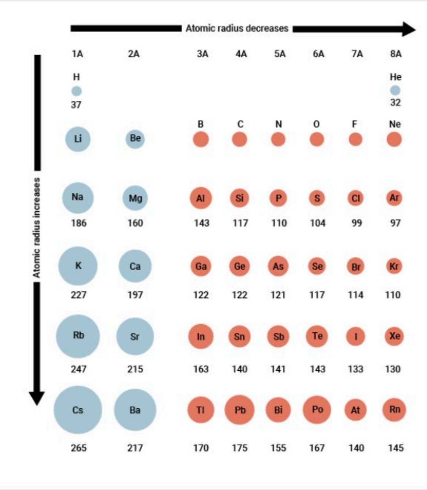
我们如果把这个原子半径放进我们所熟悉的元素周期表里面，就得到了下面这张图：
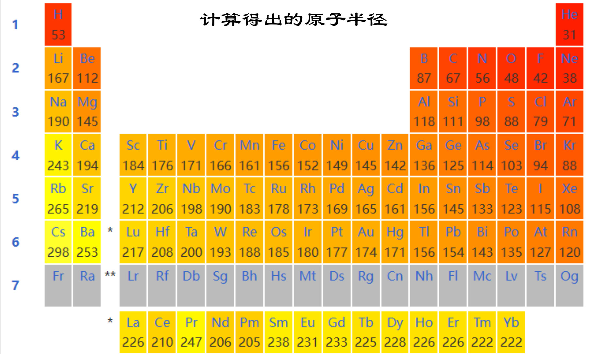
Tips:
让我们对以上的原子半径图进行讨论： ~~（高中知识好耶！）~~
- 纵向来看，原子半径随周期增大而增大，原因是电子层数的增加。
- 横向来看，原子半径随着主族数增大而减小（对于副族元素来说就是从左到右的顺序），当然，\({0}\)族的原子半径在同一周期里最小。
- 对角线规律：我们一般认为对角线上的元素的性质相近，因为相比起同族，对角线上的元素的原子半径可能更接近。
- 镧系收缩：<待补充>
5.3 核外电子排布
5.3.1 电子的粒子性
回忆一下高中物理知识，光电效应的有关公式：
这个公式说明了光的粒子性，并且证明了光的能量是不连续的，其依附于光子上，并且也间接说明了电子的能量也是不连续的，总的来说，就是量子化。
5.3.2 电子的波粒二象性
为了解释光既可以在干涉衍射中表现波动性，也可以在光电效应中体现粒子性，德布罗意提出了波粒二象性的假说用来解释光的性质。
同样他推导所有微观实物粒子都具有波粒二象性，且粒子的波长为：
该假说后来得到了实验证实。
5.3.3 薛定谔方程与波函数*
其中\({\psi}\)为波函数，\({m}\)为粒子质量，\({E}\)总能量，\({V}\)为体系的势能。
Tips:
- \({|\psi|^2}\)表示\({xyz}\)处单位体积内电子出现的概率（概率密度）
\({|\psi|^2}\)越大，电子云密度越大。我们如何将\({|\psi|^2}\)和化学中对原子的研究联系起来？ + 电子常出现在其概率密度较大的地方，也就是电子云密度较大的空间。 + 所以我们可以称\({\psi}\)为原子核外电子运动轨道，简称为原子轨道。
5.3.4 原子轨道及其量子数
我们先来展示部分原子轨道以及对应的量子数：
~~反正是高中知识对叭~~


Tips:
在利用薛定谔方程求解原子轨道和核外电子时候，我们可以通过四个量子数：主量子数，角量子数，磁量子数，自选量子数使得方程有合适的解。
- 主量子数\({n}\)：表示电子的电子层，取正整数\({n = 1, 2, 3,\ldots}\)
- 角量子数\({l}\)：表示电子亚层，决定了电子云的形状，取值为\({l = 0, 1, 2,\ldots ,n-1}\)，其中\({l = 0}\)对应\({s}\)轨道，\({l = 1}\)对应\({p}\)轨道，以此类推。
- 磁量子数\({m_l}\)：表示电子云的延展方向，取值为\({m_l = 0, \pm 1, \pm 2,\ldots,\pm l}\)，其中我们一般把\({m_l = 0}\)规定为向\({z}\)轴方向延展。
- 自旋量子数\({m_s}\)：表示电子的自旋方向，其取值范围为\({m_s = \pm \frac{1}{2}}\)
通过以上四个量子数，我们可以量化原子轨道和核外电子的性质，注意这里将两者分开了,其中原子轨道可由前三个描述，核外电子由四个量子数描述。
5.3.5 核外电子排布规则
有了以上理论，我们可以知道原子轨道的分布。电子在原子中主要是在原子轨道上运动的，那电子在不同原子轨道上是如何分布的？
在之后完善的理论中，我们对核外电子的排布规则总结出了3+1规则：
- \({Pauli}\)不相容原则：
每一个原子轨道最多容纳两个电子，严谨来说，不允许在一个原子中出现两个量子数完全相同的电子。 - 能量最低原则：
在不违反泡利不相容原则的前提下，电子会尽可能占据低能量轨道。 - 洪特规则 ：
多个电子在能量相同的原子轨道上分布时，会尽可能占据不同的能量轨道。 - 附加规则：
轨道全满，半空，全空时候能量较低。
Tips:
对于能量最低原则的进一步解释：
- 根据高中的知识，我们知道电子是从低能级开始填充，后排布高能级。那么问题来了，能级是怎么分的？
- 对此我们有能级交错现象，钻穿效应，屏蔽效应。
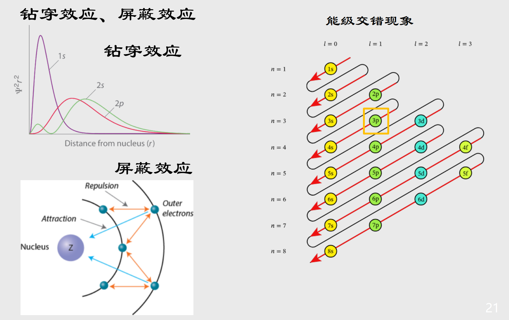
5.3.6 电子排布式的表示
这部分在高中化学中已经有了充分的介绍，故这边仅作简单的示范：
- 电子排布式（电子构型）
对于元素\({\rm S}\)，我们一般表示为\({1s^22s^22p^63s^23p^4}\)，也有缩写为\({[\rm Ne]3s^23p^4}\) - 轨道表示式（电子轨道图）
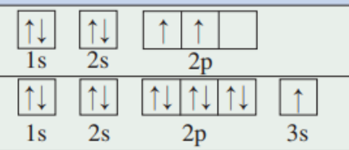
- 一些特殊的情况：
\({Cu}\)的核外电子排布式是：\({\rm [Ar]3d^{10}4s^1}\)
\({Cr}\)的核外电子排布式是：\({\rm [Ar]3d^5ds^1}\)
以上特殊情况主要是由于附加规则的存在导致的。
5.4 价键理论
对于化学键的分类：离子键，共价键，金属键。
5.4.1 共价键
共价键：相邻原子的原子轨道互相重叠，两原子在重叠轨道上共用一对自旋相反的电子。
5.4.1.1 共价键两大性质
共价键的一大特点是方向线和饱和性。
+ 饱和性
原子能形成的共价键数，取决于其未成对电子数
+ 方向性
原子轨道的空间取向，决定了共价键的方向性。
5.4.1.2 共价键的类型
对于共价键来说，其形成的方式是原子轨道的重叠（毕竟不重叠怎么共享电子），原子轨道重叠的越多，共价键越稳定。根据不同的轨道重叠方式，共价键分为了“头碰头”的\({\sigma}\)键和“肩并肩”的\({\pi}\)键。
Tips:
由以上两种不同的共价键类型进行组合，我们可以有共价单键，双键和叁键
其中，单键一般是\({\sigma}\)键，双键和三键中除了\({\sigma}键，还\)含有\({\pi}\)键。
5.4.1.3 杂化轨道
前面的原子轨道共价键理论是存在缺陷的，比如它不能解释为什么\({\rm H_2O}\)的\({\rm O-H}\)夹角是\({105^\circ}\)，对此我们引出了杂化轨道理论：
其实杂化轨道的猜想由来很简单，既然电子具有波动性，那么不同原子轨道上的电子之间是否可以发生波的叠加？
假如我们对波函数进行适当的叠加组合：
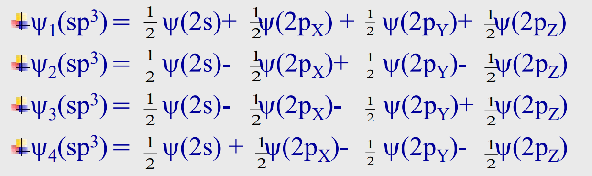
由以上叠加组合，我们得到了四个\({sp^3}\)杂化轨道。
Tips:
对于杂化轨道的角度分布，我们以在高中就有所了解的三种常见的杂化方式来介绍：
- \({sp^3}\)杂化轨道：
四个杂化轨道角度最大值方向相交\({109^\circ 28'}\)，呈现正四面体构型- \({sp^2}\)杂化轨道：
三个杂化轨道角度最大值方向相交\({120^\circ}\)，处在同一平面上，呈正三角形构型- \({sp}\)杂化轨道：
两个杂化轨道角度最大值方向相交\({180^\circ}\)，呈直线形构型
如何应用以上理论来解释我们实验所测得的化学键键角？我们来对具体的例子进行讨论：
由成键电子对加上孤对电子的计算方法，我们容易知道\({\rm NH_3}\)分子和\({\rm H_2O}\)分子的中心原子均采取的是\({sp^3}\)杂化
- 对于\({\rm NH_3}\)分子和\({\rm H_2O}\)分子，实验测量\({\rm N-H}\)键角为\({107^\circ}\)，\({\rm O-H}\)键角为\({105^\circ}\)。由上面我们知道\({\rm NH_3,H_2O}\)两者的中心原子均采取\({sp^3}\)杂化，其键角数据接近我们的理论预测值\({109^\circ}\)。
- 实际测量值比理论预测值偏小的原因是，\({\rm N}\)与\({\rm O}\)上分别存在一对和两对孤对电子，孤对电子与成键电子对之间的斥力，孤对电子之间的斥力，均比成键电子对之间的斥力要大得多，所以使得键角减小
~~（其实都是高中知识啦）~~
<内容待补充>
5.5 分子间作用力
宏观态下分子大多是以凝聚态的形式存在的，而使得这些分子凝聚在一起的作用力，我们称之为：分子间作用力。
5.5.1 范德华力
范德华力的本质是正负电荷的静电作用，根据产生途径的不同我们分为以下三类：
- 色散力：
由于瞬间偶极而产生的作用力。（电子云的大小会影响色散力的大小，一般电子云越大，色散力越大） - 诱导力：
由于极性分子使其他非极性分子的电子云变形，产生的诱导偶极所形成的作用力。 - 取向力：
极性分子间按照其极性方向而一定顺序排列，形成的永久偶极产生的作用力
以下比喻来自季鹏飞老师：
取向力就是两个E人，两个人都主动出击，不停地聊。
诱导力就是一个E人和一个I人，虽然I人不喜欢说话，但是经不住E人的健谈，也产生了聊天的欲望。
色散力就是两个I人坐一起，虽然一句话不说，但是怪尴尬的，两个人心里时不时说想说句话，偶尔眼神对上就笑一下。
5.5.2 氢键
氢键的本质与范德华力并无差别（其本质都是静电作用），但是由于相比起范德华力，它实在是太！强！了！所以我们单独拉出来讨论。
氢键的表示为\({\rm X-H\cdots Y}\) ，其具有饱和性和方向性（一个\({\rm H}\)最多形成两个氢键，\({\rm X-H\cdots Y}\)的键角尽可能接近\({180^\circ}\)）。键能一般在\({40kJ·mol^{-1}}\)以下，比化学键键能小很多，但是比范德华力大很多。
5.5.3 分子间作用力的相对大小
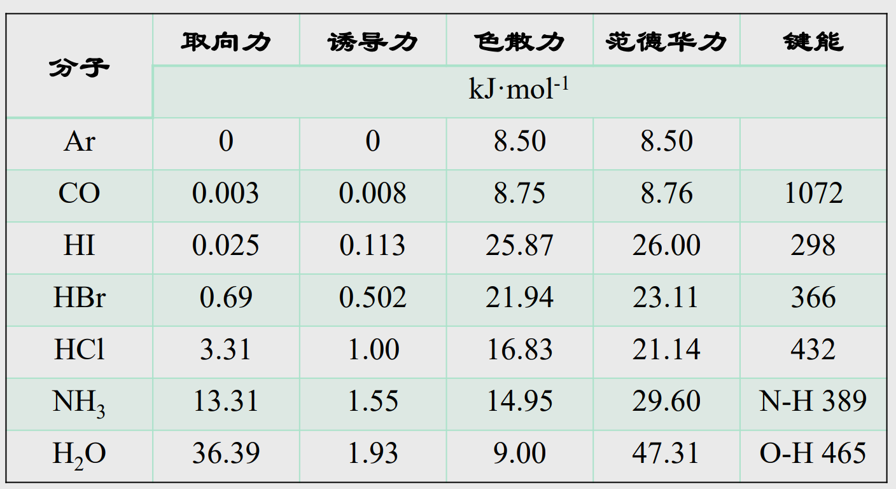
5.5.4 芳环堆积
色散力的一种特殊形式。
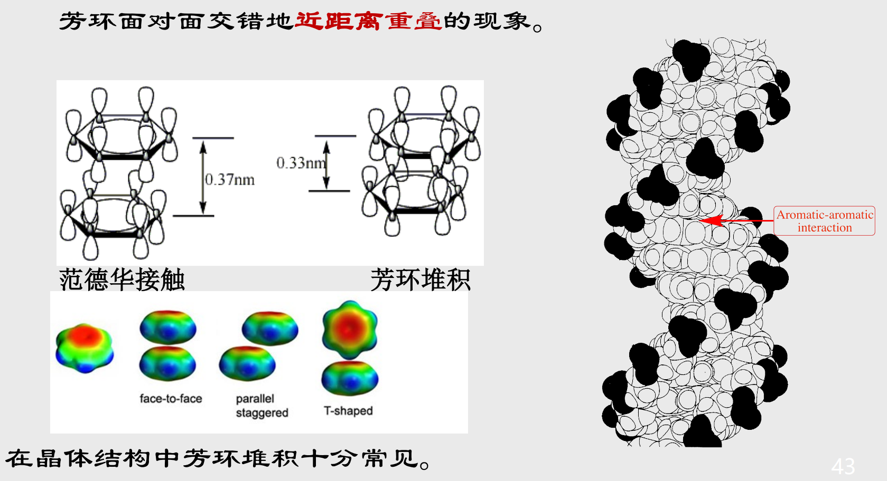